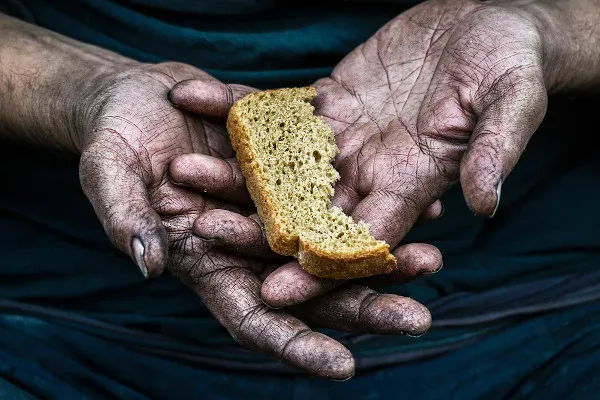
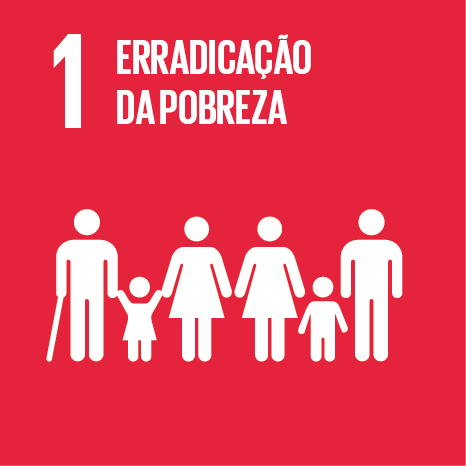
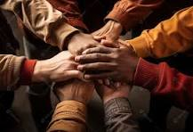

Erradicação da pobreza
Em 2000, o mundo comprometeu-se em reduzir pela metade o número de pessoas vivendo em extrema pobreza e alcançou ganhos notáveis no desenvolvimento humano. Até 2015, a pobreza havia sido reduzida significativamente, o acesso ao ensino básico e os resultados da saúde melhoraram, bem como foram realizados progressos na promoção da igualdade de gênero e no empoderamento das mulheres e meninas. No entanto, a erradicação da pobreza extrema continua a ser um desafio, com mais de 700 milhões de pessoas vivendo, globalmente, com menos de US$ 1,90 (PPP) por dia e mais da metade da população global vivendo com menos de US$ 8,00 por dia.
Em um mundo confrontado pelos crescentes desafios para o desenvolvimento, a Agenda 2030 reconhece que a erradicação da pobreza, em todas as suas formas, é o maior desafio global para atingirmos o desenvolvimento sustentável. Por isso, a grande prioridade do desenvolvimento sustentável deve ser os mais pobres e vulneráveis: ninguém será deixado para trás!
  Metas do Objetivo 1:
1.1 - Até 2030, erradicar a pobreza extrema para todas as pessoas em todos os lugares, atualmente medida como pessoas vivendo com menos de US$ 1,25 por dia;
1.2 - Até 2030, reduzir pelo menos à metade a proporção de homens, mulheres e crianças, de todas as idades, que vivem na pobreza, em todas as suas dimensões, de acordo com as definições nacionais;
1.3 - Implementar, em nível nacional, medidas e sistemas de proteção social apropriados, para todos, incluindo pisos, e até 2030 atingir a cobertura substancial dos pobres e vulneráveis;
1.4 - Até 2030, garantir que todos os homens e mulheres, particularmente os pobres e vulneráveis, tenham direitos iguais aos recursos econômicos, bem como acesso a serviços básicos, propriedade e controle sobre a terra e outras formas de propriedade, herança, recursos naturais, novas tecnologias apropriadas e serviços financeiros, incluindo microfinanças;
1.5 - Até 2030, construir a resiliência dos pobres e daqueles em situação de vulnerabilidade, e reduzir a exposição e vulnerabilidade destes a eventos extremos relacionados com o clima e outros choques e desastres econômicos, sociais e ambientais;
1.a - Garantir uma mobilização significativa de recursos a partir de uma variedade de fontes, inclusive por meio do reforço da cooperação para o desenvolvimento, de forma a proporcionar meios adequados e previsíveis para que os países em desenvolvimento, em particular os países de menor desenvolvimento relativo, implementem programas e políticas para acabar com a pobreza em todas as suas dimensões;
1.b - Criar marcos políticos sólidos, em níveis nacional, regional e internacional, com base em estratégias de desenvolvimento a favor dos pobres e sensíveis a gênero, para apoiar investimentos acelerados nas ações de erradicação da pobreza.